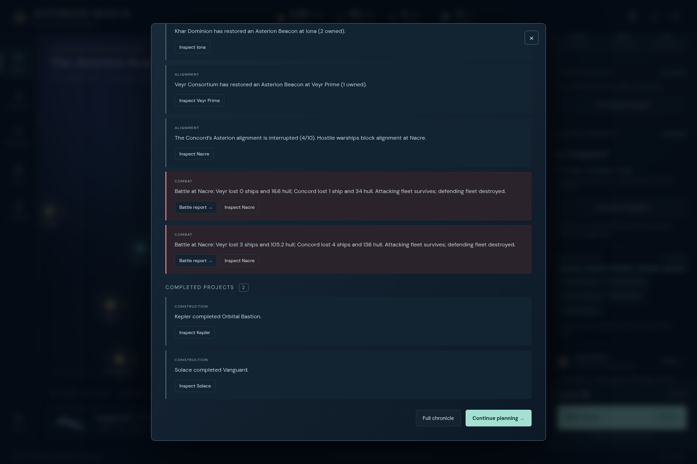
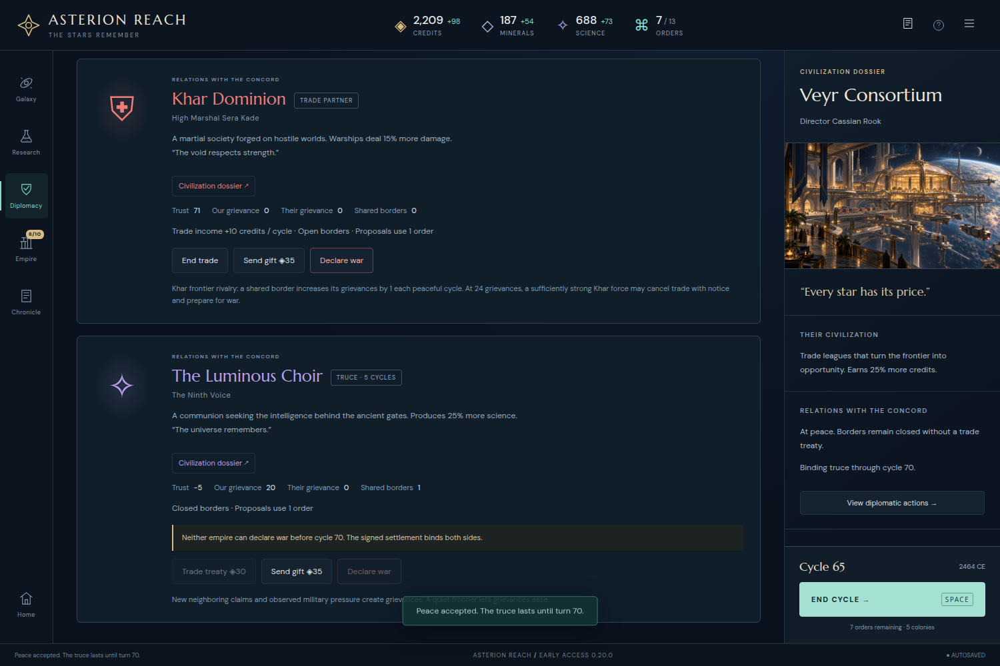

Recommendation: document the completed campaign; make no immediate simulation change from it. ODYSSEY’s three blockade interruptions, repeated relief operations and final paid settlements demonstrate consequential choices. The evidence does not establish an execution defect, a need for stronger AI, or a need for additional late-game spending systems.
Later independent interpretation of the finished UI campaign. This review ran no game commands, replay, counterfactual, browser gameplay or AI instrumentation. All 52 original evidence files were verified before and after the passive audit. The separate exact replay belongs to campaign_review and was not rerun here.
The exploration-led plan took a real setback: the player preserved Stillwater’s Observatory at 20, then lost its settlement race to Khar at 27. Redirecting the Ark to Kepler avoided committing to an unprepared war. The preserved history later recorded Khar’s own atlas choice. This is a meaningful distance and ownership constraint, not a failed discovery command or lost reward owed to the player. Original decisions 261, 312, 341 and 448 support that reading.
Production thresholds and replacement losses influenced actual investments. Solace’s Forge crossed the one-cycle frigate threshold; mineral reserves governed Beacon timing; replacing Habitats retained citizens above capacity. During the war, laboratories became shipyards, with Nacre explicitly losing its Academy support. Completed research therefore made room for useful defensive industry rather than merely producing an empty research screen. These are decisions in the recorded campaign, not claims of optimal play.
| Arrival cycle | Observed event | Strategic consequence |
|---|---|---|
| 56 | Six Veyr frigates defeat Nacre’s four-ship lead and separate reinforcement. | Alignment 5→4; three assembled frigates relieve the blockade and require repair. |
| 57 | Four Choir frigates destroy Sundrift’s cruiser. | Alignment 4→3; another relief operation draws ships away from other positions and a lab becomes a yard. |
| 61 | Two Veyr attackers and two defenders destroy one another; two Choir frigates subsequently occupy Nacre. | Alignment 6→5; the player reorganizes guards and relief forces while Khar closes to 4/10. |
| 63 | A further Veyr encounter ends in mutual destruction without a surviving hostile occupier. | Alignment advances 6→7 despite losing the guard. Orbital occupation, not casualty count alone, controls the blockade rule. |
| 65–66 | The player reinforces Nacre, pays for two peace settlements, then completes alignment. | Concord ends at 10/10, Khar 9/10, Choir 6/10 and Veyr 4/10. No tie-break was used. |
The nine retained player-involved reports record 13 frigates and one cruiser lost. The final own force contains eight frigates and a scout. These figures describe the preserved reports and final holdings, not a lifetime-statistics feature or a difficulty estimate. The public race was close at the finish; this does not establish that a different final decision would have lost.

The final peace is a policy question, not an invalid settlement. At cycle 65, the ordinary UI offered each settlement for 60 credits and one order, explained prolonged-war willingness, and produced the advertised truce through cycle 70. The pinned willingness formula adds three points per war cycle and uses a threshold of 36 for Veyr and Choir, so twelve cycles alone suffice. Public alignment progress is absent from that formula. It is reasonable to revisit that policy later if civilizations should resist an opponent’s imminent victory, but this campaign does not prove either opponent could still interrupt the reinforced network, or that refusing peace would improve the experience. No AI motive or absorption-helper causation is inferred. See receipts 735 and 747–751 and the pinned diplomacy source.
Repeated rebuilding was real interaction work. Eighteen quick commissions, fourteen paid merges and three repairs appear in successful receipts. The player also selected identities, preserved or resumed Hold, redistributed guards, and accepted minimum-movement merge outcomes. This supports documenting late-game control effort. It does not yet justify automatic merging, standing purchases or free actions that would remove those choices.
The warning complaint needs a limit. The frozen author report describes repeated unused-order confirmations. Pinned advanceTurn requires unused orders and an unheld ready fleet or unassigned research; unused orders alone are insufficient. The original driver automatically confirms the modal but records only the subsequent briefing. An exact warning count and each trigger therefore cannot be recovered from these receipts alone. The Game menu already exposes “Warn before ending a cycle with unused orders” (receipt 4). The author’s experienced friction is retained; no broken Hold behavior or reserve-orders-only warning is established.
| Evidence | Classification |
|---|---|
| Shields was changed at 212/220 during 44, then selected again at 45. | Player reading mistake, explicitly corrected without rollback. The ordinary research-refund rule was followed. |
| The intended 52 Hold/build batch overlapped an actual end cycle; those actions first succeeded at 53. | Driver sequencing error. Do not attribute the late commission to the game or rewrite it into cycle 52. |
| Four frigates and a separate reinforcement defended Nacre sequentially. | Observed formation-combat rule, already disclosed. A defensive lead does not combine formations or guarantee their survival. |
| Seven driver errors; no recorded browser errors. | Preserve the distinction. The misnamed postgame screenshot is a menu, not proof of a report-rendering failure. |
Both Nacre and Sundrift already had intact Orbital Bastions at cycle 52 and retained them during the later blockades. The guide describes colony defense and invasion retaliation, but could connect these facts explicitly:
Orbital Bastions retaliate during invasion. They do not join orbital fleet battles or prevent Beacon blockades.
This is a useful explanation of a rule exposed by the campaign, not a demonstrated player misunderstanding or required correction. The player never explicitly claimed Bastions should stop those blockades. No guide change is necessary to validate this ending.

Audit results and limits · 59 original receipt excerpts with event indices · Nine safe observation excerpts with line numbers · Player-involved retained reports · Separately authored exact replay results · Replay correction ledger · Original source/build pins · Passive audit script · Artifact hashes
The original campaign ran version 0.20 at integrated revision 47e037308271ff3d3ac0d1fc870a889cdf0a67c4; its 14 engine modules match fe09832333e98886568beb6e3a07c84bccbb285b. The separate reviewer reproduced 280 commands, including 65 end turns, and all 16 actual exports exactly. Those are checks of this one history. No untouched pre-relief 56/57 exports exist; this assessment uses original safe observations and does not invent them. The final byte hash remains 98b961e2ea588ee7c6ffadcabdeb1a947515f489101262951916dd851122610b.